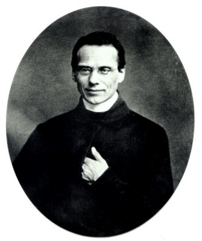

Utemeljitelji i rano razdoblje reda
Suosnivač · Misionar · Svećenik
Sv. Franjo Ksaverski
Jedan od prvih Ignacijevih drugova, Franjo je misionarsko poslanje živio na putovanjima prema Indiji, jugoistočnoj Aziji i Japanu. Njegova pisma čuvaju svjedočanstvo apostolske revnosti i susreta različitih kultura.

Izvor slike
- Spomendan
- 3. prosinca
- Zaštitništvo
- vanjske misije · misionari · moreplovci · župne misije · Katoličke misije
- Slavi se
- 3. prosinca · Spomendan
- Liturgijski stupanj
- Spomendan
Životopis
Sveti Franjo Ksaverski jedan je od najpoznatijih misionara novoga vijeka. U desetak godina prešao je goleme udaljenosti od Europe preko Indije i jugoistočne Azije do Japana, a umro je pokušavajući otvoriti put prema Kini. Njegova pisma otkrivaju iznimnu apostolsku revnost, tjelesnu izdržljivost i spremnost na učenje, ali i čovjeka 16. stoljeća čije je djelovanje bilo povezano s portugalskom kolonijalnom mrežom i tadašnjim razumijevanjem odnosa Crkve i države.
Rodio se 7. travnja 1506. u dvorcu Xavier u Kraljevini Navari kao Francisco de Jasso y Azpilicueta. Potjecao je iz plemićke obitelji koja je teško stradala u političkim sukobima nakon osvajanja Navare. Obiteljska je tvrđava djelomično razorena, a dio posjeda oduzet. Franjo je odrastao u ozračju ponosa, gubitka i želje da obrazovanjem ponovno stekne ugled.
Godine 1525. otišao je na Sveučilište u Parizu. Bio je sposoban student i sportaš te je težio akademskoj karijeri. U kolegiju svete Barbare dijelio je sobu s Petrom Faberom i starijim baskijskim studentom Ignacijem Lojolskim. Ignacije je već prošao obraćenje i drugima davao „Duhovne vježbe”. Franjo mu se isprva opirao, smatrajući ga smetnjom vlastitim planovima. Postupno je ipak prihvatio njegovo vodstvo i dopustio da pitanje životnoga cilja promijeni smjer njegovih ambicija.
Ignacije je oko sebe okupio skupinu „prijatelja u Gospodinu”. Dana 15. kolovoza 1534. Franjo, Ignacije, Petar Faber i još četvorica drugova položili su u kapeli na Montmartreu zavjete siromaštva i čistoće. Željeli su poći u Svetu zemlju, a ako to ne bude moguće, staviti se papi na raspolaganje. Franjo je završio studij, poučavao i 1537. u Veneciji primio svećenički red.
Rat je spriječio planirano putovanje u Jeruzalem. Drugovi su otišli u Rim i ponudili svoje služenje papi Pavlu III. Kada je portugalski kralj Ivan III. zatražio svećenike za područja pod portugalskom upravom u Aziji, jedan od prvotno određenih isusovaca razbolio se. Ignacije je u kratkom roku poslao Franju. On je prihvatio poslanje bez duge priprave, popravio odjeću i krenuo prema Lisabonu.
Iz Portugala je isplovio 1541. kao papinski nuncij za Istok. Put oko Afrike trajao je više od godinu dana. Brodovi su bili prenapučeni, bolesti česte, a zaustavljanje u Mozambiku dugotrajno. Franjo je njegovao bolesnike, ispovijedao i dijelio oskudne životne uvjete putnika. U Gou je stigao u svibnju 1542. godine.
Goa je bila središte portugalske vlasti, trgovine i crkvenoga života u Aziji. Franjo je posjećivao bolnice i zatvore, poučavao djecu, propovijedao na ulicama i pozivao portugalske doseljenike da vlastiti život usklade s vjerom koju javno ispovijedaju. Uočio je da sablazan kršćana može ozbiljno otežati navještaj Evanđelja. Njegov prvi cilj nije bio putovanje u nepoznate zemlje, nego obnova zajednice koja je već nosila kršćansko ime.
Potom je otišao među Parave, ribarske zajednice na obali južne Indije koje su već bile krštene, ali su dugo ostale gotovo bez svećenika i dostatne pouke. Uz pomoć tumača učio je osnovne molitve i vjeronauk na mjesnim jezicima. Obilazio je sela zvoneći malim zvonom kako bi okupio djecu i odrasle. Krštavao je velik broj ljudi, poučavao ih i nastojao osigurati trajnu pastoralnu skrb.
Brzina krštenja i oskudna jezična priprava ostaju među važnim pitanjima njegova djelovanja. Franjo je često radio bez dovoljno suradnika i oslanjao se na kratke prijevode i katehiste. U pismima Europi neprestano je tražio više svećenika, učitelja i ljudi spremnih učiti jezike. Njegova revnost bila je stvarna, ali su okolnosti i misionarske metode njegova vremena ponekad ostavljale novoobraćene zajednice nedovoljno poučenima i previše ovisnima o kolonijalnoj zaštiti.
Putovao je prema Travancoreu, Malacci i Molučkim otocima. Posjećivao je udaljene zajednice, mirio sukobe, poučavao i krštavao. Plovidba između otoka bila je opasna, a bolesti i nestašice stalni. Franjo je bio spreman poći onamo gdje nije bilo ustaljene crkvene prisutnosti. Njegova pisma prenose i oduševljenje i nestrpljenje: radovao se prihvaćanju vjere, ali je znao vrlo oštro prosuđivati kulture koje još nije dovoljno poznavao.
Njegov položaj bio je nerazdvojiv od portugalskoga imperija. Putovao je njihovim brodovima, primao zaštitu krune i od vlasti očekivao potporu crkvenomu radu. Godine 1546. tražio je snažniji kraljevski nadzor nad vjerskim životom u Goi; taj se zahtjev povezuje s kasnijim osnutkom Goanske inkvizicije. Franjo nije doživio njezino uvođenje, a povjesničari raspravljaju o točnom dosegu njegova prijedloga. Dokumenti ipak pokazuju da je prihvaćao prisilne mehanizme države koje današnje razumijevanje vjerske slobode ne može opravdati.
U Malacci je upoznao japanskoga obraćenika Anjira, poznatoga i kao Yajirō. Njegova su izvješća u Franji probudila želju da pođe u Japan. Stigao je u Kagoshimu 1549. s Anjirom i isusovačkim suradnicima. Japan je pred njega postavio nove zahtjeve. Susreo je obrazovanu kulturu koja je cijenila raspravu, društveni položaj i disciplinu. Brzo je shvatio da siromašan vanjski izgled, koji je u Indiji bio znak evanđeoske blizine, japanski velikaši mogu protumačiti kao nedostatak vjerodostojnosti.
Pokušavao je učiti jezik i prilagoditi način predstavljanja. Početni prijevodi kršćanskih pojmova izazivali su nesporazume, pa su ih morali popravljati. Franjo je putovao prema Kyotu kako bi dobio dopuštenje cara, ali je pronašao politički oslabljen dvor i grad zahvaćen nemirima. Veći je uspjeh postigao u Yamaguchiju, gdje mu je mjesni gospodar dopustio propovijedati. U Japanu je jasnije uvidio važnost dobro obrazovanih misionara koji poštuju jezik, učenost i običaje naroda kojemu dolaze.
Razgovori s Japancima uvjerili su ga da će budućnost misije biti povezana s Kinom, čiji je kulturni ugled snažno djelovao na Japan. Vratio se prema Indiji kako bi uredio poslove i pripremio put. Namjeravao je ući u Kinu, tada zatvorenu većini stranaca, uz pomoć trgovca koji mu je obećao prijelaz s otoka Shangchuana nedaleko od obale.
Čekajući brod, Franjo se razbolio. U skromnoj kolibi, uz malobrojne pratitelje, umro je 3. prosinca 1552. Imao je četrdeset šest godina. Privremeno je pokopan na otoku, a tijelo mu je poslije preneseno preko Malacce u Gou. Njegovi se zemni ostatci časte u bazilici Dobroga Isusa u Staroj Goi.
Papa Pavao V. proglasio ga je blaženim 1619., a papa Grgur XV. svetim 1622., istoga dana kada i Ignacija Lojolskoga, Tereziju Avilsku, Filipa Nerija i Izidora Ratara. Papa Pio XI. proglasio ga je 1927., zajedno sa svetom Terezijom iz Lisieuxa, zaštitnikom katoličkih misija. Spomendan svetoga Franje Ksaverskoga slavi se 3. prosinca.
Njegova se baština ne može svesti ni na herojski zemljovid putovanja ni na jednostavnu osudu kolonijalnoga doba. Bio je neumoran svećenik koji je dijelio opasnosti putnika, služio bolesnima, tražio suradnike i učio mijenjati pristup kada bi susreo novu kulturu. Istodobno je ostao obilježen europskim predrasudama i oslanjanjem na političku moć. Njegova svetost nije tvrdnja da je svaka njegova procjena bila savršena. Ona se očituje u predanju Kristu, spremnosti da napusti vlastitu sigurnost i u stalnom traženju puta kojim će Evanđelje doprijeti do ljudi izvan granica njegova dotadašnjeg svijeta.
Molitve i dodatni sadržaji
Misli
Nije stvarni fizički napor ono što se računa u napredak čovjeka, niti priroda zadatka, već duh vjere s kojim se on poduzima.
Govorite im o velikom Božjem milosrđu… Ponekad ljudima pomaže vaše pričanje o vlastitoj žalosnoj prošlosti.
Nemoguće je pronaći sveca koji nije ozbiljno shvaćao "dva P": molitvu i pokoru.Misli svetaca